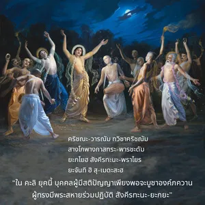

นี้ เพราะการปฏิบัติเช่นนี้จะส่งผลทุกสิ่งที่เธอปรารถนาเพื่อให้ชีวิตอยู่อย่างมีความสุขและได้รับอิสรภาพหลุดพ้น”")
ในตอนเริ่มต้นของการสร้างพระผู้เป็นเจ้าแห่งสรรพสัตว์ทรงส่งประชากรมนุษย์และเทวดา พร้อมทั้งพิธีการบูชาพระวิษฺณุและทรงให้พรด้วยการตรัสว่า “พวกเธอจงมีความสุขด้วย ยชฺญ (การบูชา) นี้ เพราะการปฏิบัติเช่นนี้จะส่งผลทุกสิ่งที่เธอปรารถนาเพื่อให้ชีวิตอยู่อย่างมีความสุขและได้รับอิสรภาพหลุดพ้น”

พระผู้เป็นเจ้าแห่งสรรพสัตว์ทั้งหลาย (พระวิษฺณุ) ทรงสร้างโลกวัตถุเพื่อเสนอให้พันธวิญญาณได้มีโอกาสกลับคืนสู่เหย้าคืนสู่องค์ภควานฺ สิ่งมีชีวิตทั้งหลายภายในการสร้างโลกวัตถุอยู่ภายใต้สภาวะของธรรมชาติวัตถุ เพราะลืมความสัมพันธ์กับพระวิษฺณุ หรือองค์กฺฤษฺณ บุคลิกภาพสูงสุดแห่งพระเจ้า หลักการพระเวทมีไว้เพื่อช่วยเราให้เข้าใจความสัมพันธ์นิรันดรนี้ ดังที่กล่าวไว้ใน ภควัท-คีตา : เวไทศฺ จ สไรฺวรฺ อหมฺ เอว เวทฺยห์ องค์ภควานฺทรงตรัสว่า จุดมุ่งหมายของพระเวท คือ เพื่อให้เข้าใจพระองค์ บทสวดมนต์พระเวท ได้กล่าวว่า ปตึ วิศฺวสฺยาตฺเมศฺวรมฺ ดังนั้น พระผู้เป็นเจ้าของมวลชีวิต คือ บุคลิกภาพสูงสุดแห่งพระเจ้า พระวิษฺณุ ใน ศฺรีมทฺ-ภาควตมฺ (2.4.20) ศฺรีล ศุกเทว โคสฺวามี อธิบายถึงองค์ภควานฺว่าเป็น ปติ ในหลายรูปแบบ
ศฺริยห์ ปติรฺ ยชฺญ-ปติห์ ปฺรชา-ปติรฺ
ธิยำ ปติรฺ โลก-ปติรฺ ธรา-ปติห์
ปติรฺ คติศฺ จานฺธก-วฺฤษฺณิ-สาตฺวตำ
ปฺรสีทตำ เม ภควานฺ สตำ ปติห์
ปฺรชา-ปติ คือ พระวิษฺณุ พระองค์ทรงเป็นองค์ภควานฺของมวลชีวิต เป็นเจ้าแห่งโลกทั้งหมด เป็นเจ้าแห่งความสง่างามทั้งหมด และเป็นผู้ปกป้องทุกๆ คน พระองค์ทรงสร้างโลกวัตถุนี้เพื่อเปิดโอกาสให้ดวงวิญญาณที่อยู่ในสภาวะได้เรียนรู้การปฎิบัติ ยชฺญ (การบูชา) เพื่อให้พระวิษฺณุทรงพอพระทัย เพื่อให้เราขณะที่อยู่ในโลกวัตถุนี้ได้สามารถใช้ชีวิตอยู่อย่างสะดวกสบายโดยไม่มีความวิตกกังวล และหลังจากร่างกายวัตถุปัจจุบันนี้จบสิ้นลง เราจะสามารถบรรลุถึงอาณาจักรแห่งองค์ภควานฺได้ นี่คือโครงการทั้งหมดสำหรับพันธวิญญาณ ด้วยการปฎิบัติ ยชฺญ พันธวิญญาณจะค่อยๆ มีกฺฤษฺณจิตสำนึก และมีคุณธรรมในทุกแง่ทุกมุม ใน กลิ ยุคนี้คัมภีร์พระเวทได้แนะนำ สงฺกีรฺตน-ยชฺญ การร้องเพลงภาวนาพระนามขององค์ภควานฺ ระบบทิพย์นี้องค์ ไจตนฺย ทรงแนะนำไว้เพื่อการขนส่งมวลมนุษย์ในยุคนี้ สงฺกีรฺตน-ยชฺญ และกฺฤษฺณจิตสำนึกไปด้วยกันได้เป็นอย่างดี ศฺรีมทฺ-ภาควตมฺ (11.5.32) ได้กล่าวถึงองค์ศฺรี กฺฤษฺณในรูปของผู้ปฏิบัติการอุทิศตนเสียสละรับใช้ (องค์ ไจตนฺย) สัมพันธ์กับ สงฺกีรฺตน-ยชฺญ เป็นพิเศษไว้ดังนี้
กฺฤษฺณ-วรฺณํ ตฺวิษากฺฤษฺณํ
สางฺโคปางฺคาสฺตฺร-ปารฺษทมฺ
ยชฺไญห์ สงฺกีรฺตน-ปฺราไยรฺ
ยชนฺติ หิ สุ-เมธสห์
“ในกลียุคนี้บุคคลผู้มีสติปัญญาเพียงพอจะบูชาองค์ภควานฺ ผู้ทรงมีพระสหายร่วมปฏิบัติ สงฺกีรฺตน-ยชฺญ” ยชฺญ อื่นๆ ที่ได้อธิบายไว้ในวรรณกรรมพระเวทปฏิบัติได้ยากลำบากมากในกลียุคนี้ แต่ สงฺกีรฺตน-ยชฺญ นี้ ทั้งง่ายและประเสริฐด้วยประการทั้งปวง ดังที่ได้แนะนำไว้เช่นเดียวกันใน ภควัท-คีตา (9.14)